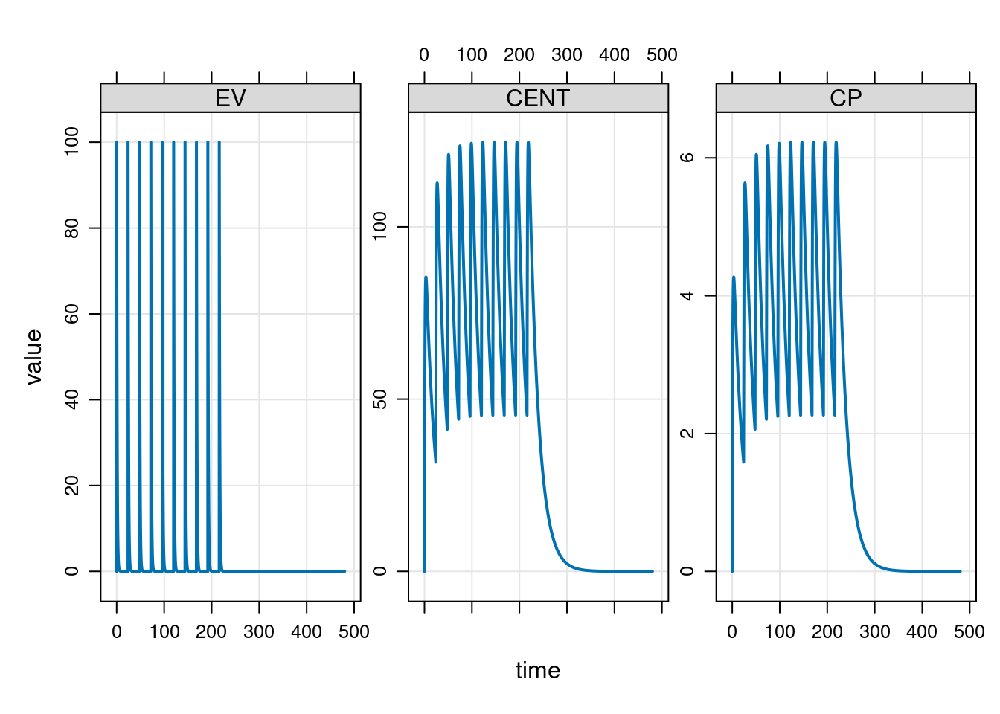
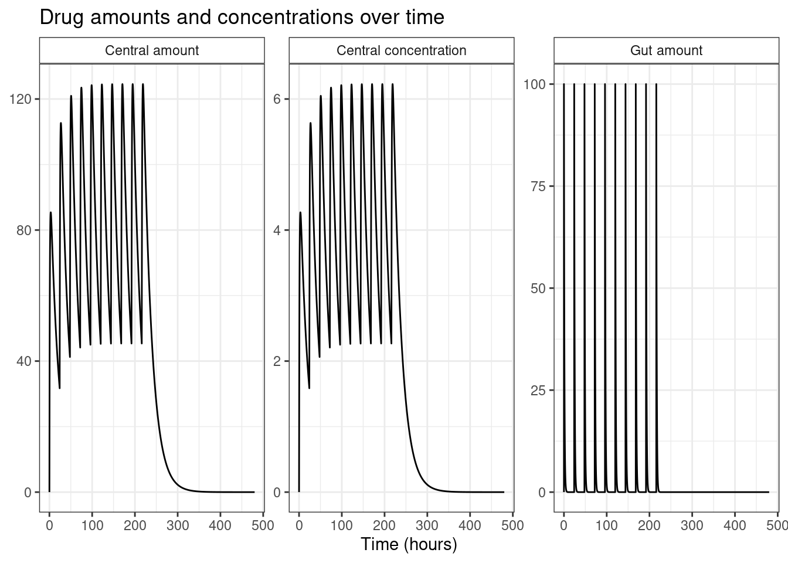
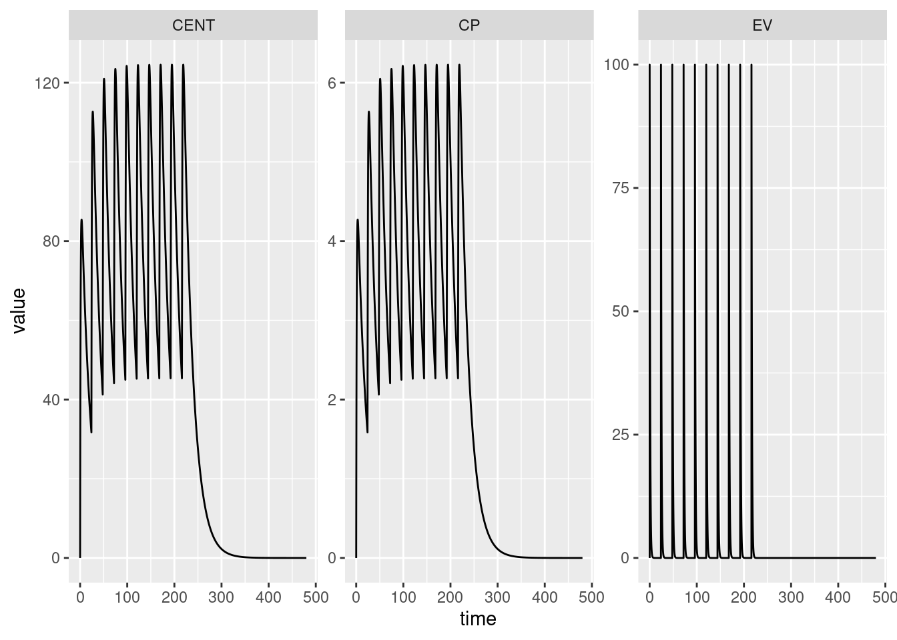

![]()
library(mrgsolve)Continuing my informal series of “Danielle learns pharmacometric modelling” posts, today I’ve decided to sit down and teach myself how to use the mrgsolve package in R.
As I’m rapidly coming to realise, the world of pharmacometric modelling is an intersting space where there are a large number of domain-specific languages that have been designed to solve a particular subset of the modelling problems faced by analysts in the field, and R serves as a lingua franca that stitches them all together and makes it possible to write analysis scripts that call on multiple tools.1
With that as the structure of the ecosystem, what you tend to find are packages that carve out a specific niche by building on top of some other tool. For this post, the niche we’re talking about is model-based simulation. In this context, it’s assumed that the analyst has a specific pharmacometric model in mind (e.g., one-compartment PK model,2 two-compartment PK model, etc etc). We are not attempting to estimate parameters from data, nor are we runing a model testing exercise. The model is presumed to exist already, usually because the analyst has already done the model fitting exercise using their tool of choice.3
Within the specific “model simulation” niche there are a number of R packages that people seem to use frequently. There’s the RxODE package4 and its successor rxode2, for example, and mrgsolve falls within the same general niche.
A simple example
Okay, let’s get started. When I started looking into mrgsolve, the place I started was with the vignettes on the package website, so I’ll start this post by using a simple modelling example taken from the get started page.
The way mrgsolve is designed allows you to write your own custom models, and later in the post I’ll talk about how this is done, but it also comes with a collection of predefined models that you can access using the modlib() function. So I’ll start there:
mod <- modlib("pk1")Building pk1 ... done.In this code, "pk1" refers to the name of one of the model that comes bundled with mrgsolve… and there will be exactly zero pharmacometricians in this world that are surprised to discover that this is a one-compartment PK model with first-order absorption into the central compartment, and first-order elimination from the central compartment. To see what parameters are used in this version of the model we can call param()…
param(mod)
Model parameters (N=3):
name value . name value
CL 1 | V 20
KA 1 | . . …and we see that out model assumes a clearance (CL) of 1, an aborption rate constant (KA) of 1, and a volume of distribution equal to 20. The mrgsolve package doesn’t keep track of units: it’s up to the user to make sure all the units are on the appropriate scale.
The message printed to the console is probably equally unsurprising, but I’ll be good and explain it. The mrgsolve package is build on top of an open source ODE solver,5 but the user doesn’t need to call it directly. Instead, a model is constructed using a model specification file (more on that later) that is then compiled to C++. This compiled model is used to run simulations, and it’s this compiled model that calls the ODE solvers. So when I called modlib("pk1"), it reads the model specification file and builds the compiled model.6
Okay so now we have a model object mod that specifies all our pharmacokinetic assumptions. In order to run a simulation, we also need to provide an event schedule that provides dosing information, and we’ll also need to say something about the time points at which we want to simulate the various pharmacokinetic quantities of interest. You can do this in a few different ways (which I’ll get to momentarily) but for the purposes of the initial example I’ll do it the same way that the “get started” vignette does, use a pipe-friendly workflow:
mod |>
ev(amt = 100, ii = 24, addl = 9) |>
mrgsim(start = 0, end = 480, delta = 0.1)Model: pk1
Dim: 4802 x 5
Time: 0 to 480
ID: 1
ID time EV CENT CP
1: 1 0.0 0.00 0.000 0.0000
2: 1 0.0 100.00 0.000 0.0000
3: 1 0.1 90.48 9.492 0.4746
4: 1 0.2 81.87 18.034 0.9017
5: 1 0.3 74.08 25.715 1.2858
6: 1 0.4 67.03 32.619 1.6309
7: 1 0.5 60.65 38.819 1.9409
8: 1 0.6 54.88 44.383 2.2191Here we take the mod object, pipe it to the ev() function that builds the event schedule, and then pipe the output to mrgsim() which then runs the simulation. In this code, the arguments to ev() are all very standard in the field:
amtis the amount of drugiiis the interdose intervaladdlis number of additional doses
The arguments to mrgsim() are used to specify the time points:
startis the initial time point (I actually didn’t need to specify it in ths case because the default value is 0)endis the final time pointdeltais the step size (i.e., the amount of time between successive time points)
The output here is a tabular data structure – not technically a data frame, but I’ll get to that – with sensible column names:
IDis a subject identifier (always 1 for this simple example)timeis the time point for the simulated measurementEVis the drug amount in the extravascular compartment (e.g., the gut, if we’re talking about oral dosing)CENTis the drug amount in the central compartmentCPis the drug concentration in the central compartment
To help you get a sense of what the simulation results look like, the mrgsolve package provides a plot method for simulation results, so if I’d wanted to I could add a call to plot() at the end of the pipeline, and get this as the output:
mod |>
ev(amt = 100, ii = 24, addl = 9) |>
mrgsim(start = 0, end = 480, delta = 0.1) |>
plot()
Very nice.
Unpacking the example
Now things get a little messier. Under the hood the mrgsolve package is doing quite a lot of magic to make it all work, and there are some design choices here that you need to be aware of if you’re planning to call mrgsolve functions programmatically. In particular, some of the functions – by design – do not produce type stable output, so some care is involved if you’re going to write automations around them or call mrgsolve from another package.7
The model library
Let’s start by taking a closer look at the library of pre-specified models that come bundled with mrgsolve. They’re stored in a package folder whose location is accessible by calling modlib() with no arguments:
modlib()[1] "/home/danielle/R/x86_64-pc-linux-gnu-library/4.3/mrgsolve/models"As you can see, when called with no inputs modlib() doesn’t return a compiled model, and it simply returns the path to the model library folder. If you want a list of the models that come bundled with mrgsolve, you can call modlib() setting list = TRUE:
modlib(list = TRUE)mrgsolve internal library: effect tmdd viral1 viral2 emax irm1 irm2 irm3 irm4 pk1cmt pk2cmt pk3cmt pk1 pk2 pk2iv popex pred1 pbpk 1005 nm-likeFinally, if you want to build and use one of these model you can call modlib() and pass the name of the model you want as the model argument:
mod <- modlib(model = "pk1")Loading model from cache.If you’re working interactively or with a script that isn’t going to be repeatedly reused with different inputs, the modlib() function is pretty handy. On the other hand if you’re a developer calling mrgsolve programmatically it’s probably better to rely on a different workflow. For instance, if you want to access the mrgsolve package folder that contains the models, you’d do something like this:
fs::path_package("mrgsolve", "models")/home/danielle/R/x86_64-pc-linux-gnu-library/4.3/mrgsolve/modelsIf you want to construct file paths to the various model specification files contained within the package, you probably want to find paths to all the .cpp files in the model folder:
modlib_dir <- fs::path_package("mrgsolve", "models")
modlib_cpp <- fs::dir_ls(modlib_dir, regexp = "\\.cpp$")
modlib_cpp/home/danielle/R/x86_64-pc-linux-gnu-library/4.3/mrgsolve/models/1005.cpp
/home/danielle/R/x86_64-pc-linux-gnu-library/4.3/mrgsolve/models/effect.cpp
/home/danielle/R/x86_64-pc-linux-gnu-library/4.3/mrgsolve/models/emax.cpp
/home/danielle/R/x86_64-pc-linux-gnu-library/4.3/mrgsolve/models/irm1.cpp
/home/danielle/R/x86_64-pc-linux-gnu-library/4.3/mrgsolve/models/irm2.cpp
/home/danielle/R/x86_64-pc-linux-gnu-library/4.3/mrgsolve/models/irm3.cpp
/home/danielle/R/x86_64-pc-linux-gnu-library/4.3/mrgsolve/models/irm4.cpp
/home/danielle/R/x86_64-pc-linux-gnu-library/4.3/mrgsolve/models/nm-like.cpp
/home/danielle/R/x86_64-pc-linux-gnu-library/4.3/mrgsolve/models/pbpk.cpp
/home/danielle/R/x86_64-pc-linux-gnu-library/4.3/mrgsolve/models/pk1.cpp
/home/danielle/R/x86_64-pc-linux-gnu-library/4.3/mrgsolve/models/pk1cmt.cpp
/home/danielle/R/x86_64-pc-linux-gnu-library/4.3/mrgsolve/models/pk1cmt_pop.cpp
/home/danielle/R/x86_64-pc-linux-gnu-library/4.3/mrgsolve/models/pk2.cpp
/home/danielle/R/x86_64-pc-linux-gnu-library/4.3/mrgsolve/models/pk2cmt.cpp
/home/danielle/R/x86_64-pc-linux-gnu-library/4.3/mrgsolve/models/pk2iv.cpp
/home/danielle/R/x86_64-pc-linux-gnu-library/4.3/mrgsolve/models/pk3cmt.cpp
/home/danielle/R/x86_64-pc-linux-gnu-library/4.3/mrgsolve/models/pkExample.cpp
/home/danielle/R/x86_64-pc-linux-gnu-library/4.3/mrgsolve/models/popex.cpp
/home/danielle/R/x86_64-pc-linux-gnu-library/4.3/mrgsolve/models/pred1.cpp
/home/danielle/R/x86_64-pc-linux-gnu-library/4.3/mrgsolve/models/tmdd.cpp
/home/danielle/R/x86_64-pc-linux-gnu-library/4.3/mrgsolve/models/viral1.cpp
/home/danielle/R/x86_64-pc-linux-gnu-library/4.3/mrgsolve/models/viral2.cppEasy done.
Building models from file
Building one of the bundled models using modlib() is a perfectly sensible thing to do when you’re working interactively or when you’re just starting out with mrgsolve, but after a while you might want to pivot to a different workflow. To that end, there’s an mread() function – and related functions mread_file() and mread_cache() – that reads a model specification file and returns the model object linked to the compiled code. As an example, here’s how I’d build the one-compartment model in the previous section, except using mread() this time:
mod <- mread(model = "pk1", project = modlib_dir)Building pk1 ... (waiting) ...
done.Optionally you can provide a file name for the model specification file that sits within the project folder, but in this case we don’t need to: if the file argument is unspecified mread() assumes that the file name is the same as the model name with file extension .cpp.8
S4 classes in mrgsolve
The mrgsolve package is build using S4 classes and of the great many object oriented programming systems available in R that’s the one I’m least comfortable with.9 But hey… I’ve just reread the S4 chapter in Advanced R, so let’s see how we go with this, shall we?
library(methods)Model objects
To begin with, let’s find out what kind of object mod is and what methods are defined for it:
is(mod)[1] "mrgmod"methods(class = "mrgmod") [1] [ [[ $ all.equal
[5] as.environment as.list blocks cmtn
[9] data_set ev_rx ev evd
[13] idata_set init initialize knobs
[17] loadso names omat param
[21] req Req revar see
[25] show smat stime summary
[29] update within zero_re
see '?methods' for accessing help and source codeA lot of those methods are unsurprising. For example, the show() method is just the S4 analog of print(). When we print the mod object at the console we’re just calling its show() method:
show(mod)
----------------- source: pk1.cpp -----------------
project: /home/danielle/R...gsolve/models
shared object: pk1-so-e23753516e53
time: start: 0 end: 24 delta: 1
add: <none>
compartments: EV CENT [2]
parameters: CL V KA [3]
captures: CP [1]
omega: 0x0
sigma: 0x0
solver: atol: 1e-08 rtol: 1e-08 maxsteps: 20k
------------------------------------------------------But there are other methods that are kind of handy when inspecting a mrgmod object. For example, if we wanted to see the source code for the corresponding model specification file we could call the see() method:
see(mod)
Model file: pk1.cpp
$PARAM @annotated
CL : 1 : Clearance (volume/time)
V : 20 : Central volume (volume)
KA : 1 : Absorption rate constant (1/time)
$CMT @annotated
EV : Extravascular compartment
CENT : Central compartment
$GLOBAL
#define CP (CENT/V)
$PKMODEL ncmt = 1, depot = TRUE
$CAPTURE @annotated
CP : Plasma concentration (mass/volume)If we didn’t want quite that much detail, a summary() would have sufficed:
summary(mod)Model: pk1
- Parameters: [3]
CL, V, KA
- Compartments: [2]
EV, CENT
- Captured: [1]
CP
- Outputs: [3]
EV, CENT, CPI don’t intend to do an exhaustive walk through of all the methods defined for mrgmod objects. That would be tiresome, and in any case I don’t even know what all of them do yet. But what I will mention is that many of the methods exist to provide public accessors for these internal slots of a mrgmod object. To illustrate, here’s a list of all the slot names:
slotNames(mod) [1] "model" "modfile" "package" "soloc" "project" "start"
[7] "end" "delta" "add" "tscale" "digits" "quiet"
[13] "verbose" "debug" "preclean" "atol" "rtol" "ss_rtol"
[19] "ss_atol" "maxsteps" "hmin" "hmax" "ixpr" "mxhnil"
[25] "shlib" "funs" "omega" "sigma" "request" "param"
[31] "init" "capture" "Icap" "capL" "Icmt" "cmtL"
[37] "args" "fixed" "advan" "trans" "mindt" "code"
[43] "annot" "envir" "plugin" "ss_cmt" Okay so one of the slots is called “param”, and denoted @param to remind us that it’s a slot of an S4 object.10 Calling the param() method is the appropriate way to access the @param slot, for instance.11 The see() method is slightly fancier, but it too is essentially an accessor function for the @modelfile and @code slots. If I were an extremely unwise woman who ignored all the best practices for S4 classes I could use a command like cat(mod@code, sep = "\n") and get roughly the same output. This is of course a terrible idea: the slots of an S4 object are considered internal details and not part of the package API. Accessing them directly is considered a faux pas and you have only yourself to blame if the developer later changes the structure of the slots and your code breaks.
Indeed, the only reason I’m talking about them here is that I find it helpful for building my own mental model of what mrgsolve does, which will become apparent in the next section when I tackle the puzzlingly magical behaviour of the ev() function.
Event objects
Model objects represent the underlying ODE system. They don’t store information about “interventions” (external forcers) on the system. In the pharmacokinetic context the main intervention we’re thinking about is dosing. An events object returned by ev() returns a event schedule that would be familiar to NONMEM users12
events <- ev(amt = 100, ii = 24, addl = 9)
eventsEvents:
time amt ii addl cmt evid
1 0 100 24 9 1 1The events object looks a lot like a data frame, but is technically an S4 object with class ev. We can verify this by calling is():
is(events)[1] "ev"However, if you take a look and see what slot names are defined for the events object, you might be unsurprised to discover that it only has two slots and is essentially just a data frame:
slotNames(events)[1] "data" "case"As such you’ll not be surprised to learn that there are as.data.frame() and as_tibble() methods defined for ev objects, so you can coerce it to whatever your preferred form of tabular data object happens to be. I’m a tibble girl myself so…
tibble::as_tibble(events)# A tibble: 1 × 6
time amt ii addl cmt evid
<dbl> <dbl> <dbl> <dbl> <dbl> <dbl>
1 0 100 24 9 1 1Danielle briefly loses her mind
Okay, it’s almost time move on to mrgsim(), the function that we use to run the simulation itself. But we have one little matter to clear up first.
Earlier I promised you a “Danielle gets confused by ev()” moment, but the previous section makes it look as if ev() is very simple. To see where Danielle kind of lost her mind momentarily, let’s return to the “simple” model simulation pipeline that I used at the start of the post:
mod |>
ev(amt = 100, ii = 24, addl = 9) |>
mrgsim(end = 480, delta = 0.1)Model: pk1
Dim: 4802 x 5
Time: 0 to 480
ID: 1
ID time EV CENT CP
1: 1 0.0 0.00 0.000 0.0000
2: 1 0.0 100.00 0.000 0.0000
3: 1 0.1 90.48 9.492 0.4746
4: 1 0.2 81.87 18.034 0.9017
5: 1 0.3 74.08 25.715 1.2858
6: 1 0.4 67.03 32.619 1.6309
7: 1 0.5 60.65 38.819 1.9409
8: 1 0.6 54.88 44.383 2.2191If you’re expecting ev() to return an “ev” object, this pipeline makes absolutely no sense whatsoever. An ev object like events simply does not have the information required to run the simulations, so… something weird is happening. It shouldn’t work, but it does???
I cried briefly. Then I read the documentation properly. Then I cried some more.
Okay, an explanation is required. What’s going on here is that much like modlib()m the ev() function is not type stable, and returns a qualitatively different kind of object when called with a different signature. When passed a model object as the first argument, it doesn’t in fact return an events schedule. It returns a model object:
ev(mod, amt = 100, ii = 24, addl = 9)
----------------- source: pk1.cpp -----------------
project: /home/danielle/R...gsolve/models
shared object: pk1-so-e23753516e53
time: start: 0 end: 24 delta: 1
add: <none>
compartments: EV CENT [2]
parameters: CL V KA [3]
captures: CP [1]
omega: 0x0
sigma: 0x0
solver: atol: 1e-08 rtol: 1e-08 maxsteps: 20k
------------------------------------------------------This model output looks to be the same as the original model object mod, but it isn’t, because it now has an ev object secretly tucked away in the @args slot (see, I told you that this weird excursion into mrgmod object slots was going to become relevant!)
mod_with_ev <- ev(mod, amt = 100, ii = 24, addl = 9)Compare the pair:
mod@argslist()mod_with_ev@args$events
Events:
time amt ii addl cmt evid
1 0 100 24 9 1 1The mrgsim() function has been written to accommodate this kind of workflow, and so is able to extract all the information it needs when called at the end of a pipeline like this one:
mod |>
ev(amt = 100, ii = 24, addl = 9) |>
mrgsim(end = 480, delta = 0.1)In essence, that’s how the magic works here. It’s a very clever trick, and I imagine it’s something that a lot of data analysts find super handy… but not something I’d want to do when writing package code. When calling mrgsolve in a programmatic way I’d probably write code that looks more like this:
out <- mrgsim_e(
x = mread_file(file = "pk1.cpp", project = modlib_dir, quiet = TRUE),
events = ev(amt = 100, ii = 24, addl = 9),
end = 480,
delta = 0.1
)Notice that: I called mrgsim_e() here rather than mrgsim(). Because mrgsolve recognises that sometimes developers might want to call it programmatically, this version of the function requires the user to pass an event object. The sneaky “event-schedule-inside-the-model-object” piping trick I showed at the start of the post does not work with mrgsim_e(), which makes it a safer choice when running simulations programmatically.13 Theoretically, I suppose, still be potential for strange errors caused by method dispatch in ev() if I wrote something like this:
foolish_simulation <- function(...) {
mrgsim_e(
x = mread_file(file = "pk1.cpp", project = modlib_dir, quiet = TRUE),
events = ev(...),
end = 480,
delta = 0.1
)
}This code is extremely unwise, because the user could really mess with things depending on what gets pass to ev() via the dots. In the most absurd case, if the user tried to pass x = 100 here thinking that it would add a column labelled x to the event schedule it would actually trigger method dispatch on the x object, and since ev() doesn’t have a method for that case, the user would receive a weird error. But… this seems like a bizarre edge case frankly. Even if the user somehow passed an mrgmod object to ev() in this fashion, the result is still an error:
foolish_simulation(amt = 100, ii = 24, addl = 9, x = 100)Error in (function (classes, fdef, mtable) : unable to find an inherited method for function 'ev' for signature '"numeric"'foolish_simulation(amt = 100, ii = 24, addl = 9, x = mod)Error: invalid 'events' argumentAbout the absolute worst case I can think of is if (a) the developer wrote some code that was exactly as absurd as foolish_simulation() and then (b) the user passed an argument to ev() that altered the event table itself. But that’s… not worth worrying about.
TL;DR: Danielle wrapped herself up in knots trying to get a handle on method dispatch in ev(). That’s the only thing going on here, so let’s move along shall we?
Running simulations
Here’s what we get as the output:
outModel: pk1
Dim: 4802 x 5
Time: 0 to 480
ID: 1
ID time EV CENT CP
1: 1 0.0 0.00 0.000 0.0000
2: 1 0.0 100.00 0.000 0.0000
3: 1 0.1 90.48 9.492 0.4746
4: 1 0.2 81.87 18.034 0.9017
5: 1 0.3 74.08 25.715 1.2858
6: 1 0.4 67.03 32.619 1.6309
7: 1 0.5 60.65 38.819 1.9409
8: 1 0.6 54.88 44.383 2.2191Again, this is not technically a data frame, but it’s easily coercible to one, so if that’s what you want you can do this:14
tibble::as_tibble(out)# A tibble: 4,802 × 5
ID time EV CENT CP
<dbl> <dbl> <dbl> <dbl> <dbl>
1 1 0 0 0 0
2 1 0 100 0 0
3 1 0.1 90.5 9.49 0.475
4 1 0.2 81.9 18.0 0.902
5 1 0.3 74.1 25.7 1.29
6 1 0.4 67.0 32.6 1.63
7 1 0.5 60.7 38.8 1.94
8 1 0.6 54.9 44.4 2.22
9 1 0.7 49.7 49.4 2.47
10 1 0.8 44.9 53.8 2.69
# ℹ 4,792 more rowsPlotting the results
We can use the regular plot() method here:
plot(out)
But there’s nothing stopping us from converting the output to a tibble and then tinkering to your hearts content using ggplot2 or whatever:
out_lon <- out |>
tibble::as_tibble() |>
tidyr::pivot_longer(
cols = c(EV, CENT, CP),
names_to = "variable",
values_to = "value"
)
ggplot2::ggplot(out_lon, ggplot2::aes(time, value)) +
ggplot2::geom_line() +
ggplot2::facet_wrap(~ variable, scales = "free_y")
Resources
The mrgsolve user guide is probably not the place you want to start, because it very quickly dives in deep and talks about the domain specific language used to specify models, but once you’ve wrapped your head around the basics that’s the place to look for details.
The mrgsolve vignettes provide a nice place to start, but one thing you need to keep in mind is that the vignettes posted at mrgsolve.org/vignettes are not identical to the vignettes that appear on the pkgdown website (i.e., mrgsolve.org/docs/articles), so it’s worth being careful to check which one you’re looking at!
Speaking of which, the mrgsolve pkgdown site provides all the usual documentation that you’d expect of an R package in the usual format. Function reference guides, some vignettes, links to github, etc., all that is there.
The learn mrgsolve page on the mrgsolve website has links to presentations, courses, and other things that can be helpful in getting started.
Finally, there’s a blog associated with the package that has a variety of tips, tricks, updates and news.
Footnotes
In this respect R is the unchallenged queen of languages in pharmacometrics. It’s very different to data science in the tech space, where Python is the lingua franca and R is seen as a second-class citizen. I have not yet seen a single example of anyone using Python for data analysis in this world. Judging from papers I’ve read, Julia has a small presence (e.g., you can use Turing.jl for building ODE models in Julia), but that’s the only time I’ve ever seen any statistical language other than R in this space.↩︎
The acronym PK is universally used as shorthand for “pharmacokinetics”, and a PK model is one where the primary variable you’re interested in modelling is the plasma concentration over time for some drug. If you’re totally new to this space, the post I wrote on non-compartmental analysis was written from a total-newbie perspective and spells out a lot the basic terminology used in PK modelling.↩︎
There are a lot of tools in this space: NONMEM is the oldest and most-widely used, but in addition there’s Stan/Torsten, Monolix, nlmixr, Phoenix NLME, and probably many others I don’t know about yet…↩︎
I’m can’t tell if the original package is still under active development or if it’s been deprecated. The RxODE package still appears on the nlmixr website and on GitHub, but the package is (at present?) archived on CRAN.↩︎
Specifically, it wraps the public domain Fortran library ODEPACK↩︎
As far as I can tell, the mrgsolve package builds on a per-session basis, so if I were to repeat the same command in the R session that knits this blog post, I’d see a different message informing me that mrgsolve is using the cached version of the compiled model.↩︎
I should say, for the record, that I’m not being critical here. Software developers who don’t work in statistics have a tendency to get very angry at R (and R developers) for writing hyper-flexible functions that produce wildly different output types depending on the input. While I do understand that annoyance, I also think it’s often misplaced. R is fundamentally a statistical programming language. It’s not trying to be Python, and it’s even less interested in being Rust. You wouldn’t think it from browsing the “rstats” hashtag on social media (which is massively biased towards developers), but the typical R user is someone working interactively at the console, constructing a script iteratively as they explore and work with the data set they’ve been tasked to analyse. In that context, the hyper-flexibility of a lot of R functions is designed for the convenience of the analyst. It’s not there for your convenience as a developer. Of course, I also think that package developers should always ensure that there are type-stable versions of their functions that other R developers can call in package code, but… for example, mrgsolve does in fact support this. If you’re a developer calling
mrgsolve::modlib()from within a package then IMO you don’t get to whine about mrgsolve doing it wrong. In that scenario you get what you deserve for writing your package the wrong way.↩︎Developers reading this are probably wondering where the model shared object ends up when compilation happens. By default
mread()puts the compiled model in the R temp folder, but you can override this in a persistent way by setting the"mrgsolve.soloc"option, or overriding it in the call tomread()via thesolocargument. You can also suppress compilation if you want bt settingcompile = FALSE. But probably any devs reading this would likely discover that within 5 minutes of reading the documentation anyway so there’s no real need for me to mention it.↩︎I mean… of the widely-used OOP systems, it’s the one I’m least comfortable with. The wild abandon with which R spawns new object oriented programming systems is… a lot to keep up with. Honestly it’s exhausting.↩︎
Why yes, this blog post is also an exercise in “Danielle reminds herself how S4 works and no she bloody well is not going to talk about multiple inheritance and multiple dispatch in S4 here she’s not that much of a masochist”.↩︎
As an aside,
param(mod)returns an S4 object of class “parameter_list” which in turn has ashow()method that provides that prettified looking table pf parameters, but from a practical perspective you might just want to coerce it to a regular list usingas.list(param(mod)).↩︎I really need to learn NONMEM. It’s becoming a bit absurd that I’m learning everything else before NONMEM. Oh well, I was never someone to do things in the proper order.↩︎
There are several other variants on
mrgsim()that enforce different constraints. I haven’t talked aboutdata_set()and related functions in this post, for instance, but there’s amrgsim_d()variant that requires the user to pass a data set object.↩︎Although, if you want a data frame as output, it’s probably easier to call the convenience function
mrgsim_df()which returns a data frame.↩︎
Reuse
Citation
BibTeX citation:
@online{navarro2023,
author = {Navarro, Danielle},
title = {Mrgsolve},
date = {2023-08-10},
url = {https://blog.djnavarro.net/posts/2023-08-10_mrgsolve},
langid = {en}
}
For attribution, please cite this work as: